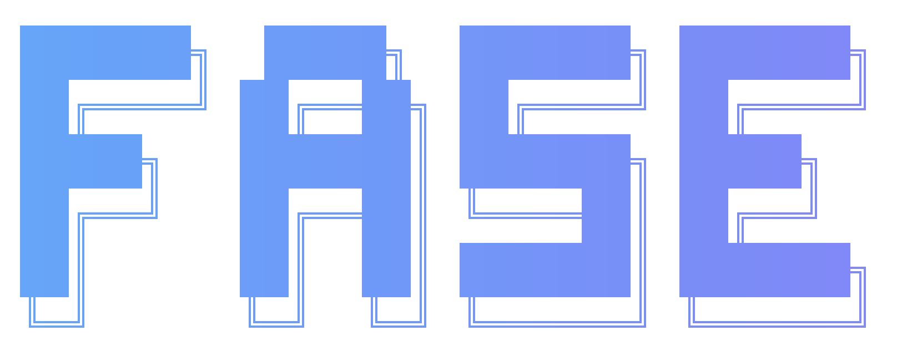

FASE automatiza tarefas de desenvolvimento, pesquisa, planejamento e execução com agentes de IA paralelos. Construído para Claude Code, OpenCode, Gemini e Codex.
Execute o instalador interativo para escolher seu(s) runtime(s) preferido(s):
Exemplo do instalador interativo:
$ npx fase-ai
╔════════════════════════════════════════════════════════════════╗
║ F.A.S.E - Framework de Automação Sem Enrolação ║
║ Instalador Interativo v2.5.0 ║
╚════════════════════════════════════════════════════════════════╝
? Qual runtime você deseja usar? (use ↑↓ para navegar)
❯ Claude Code
OpenCode
Gemini
Codex
Todos
? Tipo de instalação:
◯ Global (npm install -g)
❯ ◉ Local (no diretório atual)
? Habilitar comandos de IA? (S/n)
❯ Sim
✓ Instalando dependências...
✓ Configurando comandos...
✓ Copiando agentes de IA...
╔════════════════════════════════════════════════════════════════╗
║ ✓ Instalação concluída com sucesso! ║
║ ║
║ Próximos passos: ║
║ $ fase:ajuda.pt (ver comandos disponíveis) ║
║ $ fase:novo-projeto.pt (iniciar novo projeto) ║
╚════════════════════════════════════════════════════════════════╝
Ou instale com flags (não-interativo):
$ npx fase-ai --claude --global
✓ Runtime: Claude Code
✓ Escopo: Global
✓ Instalando em: /usr/local/lib/node_modules/
✓ Configurando bash profile...
✓ Ativando comandos FASE...
╔════════════════════════════════════════════════════════════════╗
║ ✓ Pronto! Use /fase:ajuda.pt para começar ║
╚════════════════════════════════════════════════════════════════╝
$ npx fase-ai --opencode --local
✓ Runtime: OpenCode
✓ Escopo: Local
✓ Instalando em: ./.claude/
✓ Copiando comandos...
✓ Gerando configurações...
╔════════════════════════════════════════════════════════════════╗
║ ✓ Pronto! Use fase:ajuda.pt no terminal ║
╚════════════════════════════════════════════════════════════════╝
$ npx fase-ai --all --global
✓ Instalando para todos os runtimes:
✓ Claude Code
✓ OpenCode
✓ Gemini
✓ Codex
✓ Modo: Global
╔════════════════════════════════════════════════════════════════╗
║ ✓ Todos os runtimes configurados com sucesso! ║
║ ║
║ Comece agora: ║
║ $ /fase:novo-projeto.pt ║
║ $ /fase:novo-marco.pt ║
║ $ /fase:executar-fase.pt ║
╚════════════════════════════════════════════════════════════════╝